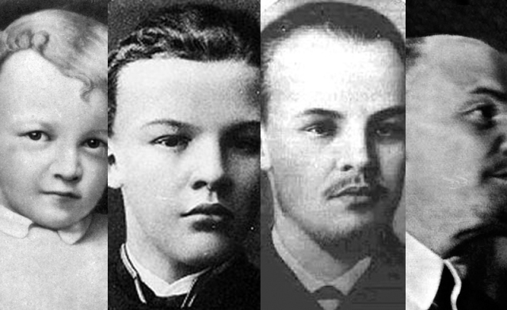

30 Desember 1922 – 21 Januari 1924

| Ketua Dewan Komisaris Rakyat Uni Soviet | |
|---|---|
| Di Kantor
30 Desember 1922 – 21 Januari 1924 |
|
|
|
| Didahului Oleh | Kantor yang Didirikan |
| Digantikan Oleh | Alexei Rykov |
| Ketua Dewan Komisaris Rakyat SFSR Rusiat | |
|---|---|
| Di Kantor
8 November 1917 – 21 Januari 1924 |
|
 |
|
| Didahului Oleh | Kantor yang Didirikan |
| Digantikan Oleh | Alexei Rykov |
| Data Pribadi | |
|---|---|
|  | |
| Lahir | 22 April 1870 Simbirsk, Russian Empire |
| Wafat | 21 Januari 1924 (Usia 53) Gorki, Moscow Governorate, Russian SFSR, Soviet Union |
| Tempat Pemakaman | Lenin's Mausoleum, Moscow, Russian Federation |
| Partai Politik | • Russian Social Democratic Labour Party (Bolsheviks) (1898–1912) • Russian Communist Party (1912–1924) |
| Afiliasi Politik Lainnya | League of Struggle for the Emancipation of the Working Class (1895–1898) |
| Pasangan | Nadezhda Krupskaya (1898–1924) |
| Hubungan | • Aleksandr Ulyanov (saudara laki laki) • Anna Ulyanova (saudara perempuan) • Dmitry Ilyich Ulyanov (saudara laki laki) • Maria Ilyinichna Ulyanova (saudara perempuan) dan tiga saudara kandung kandung lainnya |
| Orangtua | • Ilya Nikolayevich Ulyanov • Maria Alexandrovna Blank |
| Alma Mater | Saint Petersburg Imperial University |